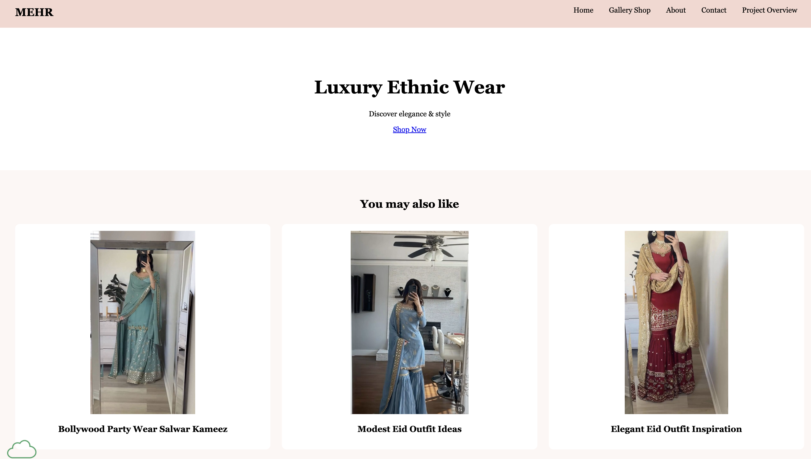

Student Evaluated
Gharzai, Mashal

Evaluation (Checklist + Feedback)
- Submission: The page link loads directly to the site being reviewed.
- File Naming: The page appears to be organized and accessible, although the folder naming structure looks a little unusual and may be worth double-checking for clarity.
- Design - Readability: The site is easy to read overall. The main title and short descriptions are clear and simple.
- Design - Colors & Fonts: The visual style feels elegant and matches the fashion theme. The branding supports the luxury and cultural identity of the site.
- CRAP Principles:
- • Contrast: The site has decent contrast, but some areas could be made stronger so important content stands out more clearly.
- • Repetition: Repeated product cards and section styling help the page feel consistent.
- • Alignment: Content appears organized in a clean structure.
- • Proximity: Related items are grouped well, especially in the product recommendation area and the “Why Choose Mehr Shop?” section.
- Page Structure: The page has a clear main content flow with a featured section, product suggestions, and a reasons-to-choose section.
- Header: The page opens with a strong headline, “Luxury Ethnic Wear,” and a short tagline, which gives the user an immediate sense of the site’s purpose.
- Main Content: The content is focused and relevant. The “Shop Now” call to action, the “You may also like” recommendations, and the “Why Choose Mehr Shop?” section all support the purpose of the website. :contentReference[oaicite:1]{index=1}
- Footer: If a footer is missing or very limited, adding one would improve completeness and professionalism.
- Navigation: The page includes a “Shop Now” link, but the site could be even stronger with a fuller navigation menu for users to move to categories, contact information, or about sections. :contentReference[oaicite:2]{index=2}
- Main Starts with h2: The page uses clear headings and sections. The heading structure generally helps organize the content well. :contentReference[oaicite:3]{index=3}
- Branding / Tagline: This is one of the strongest parts of the page. The title “Luxury Ethnic Wear” and the line “Discover elegance & style” create a clear brand identity. :contentReference[oaicite:4]{index=4}
- Validation: No validation links or badges are visible from the page content I reviewed, so adding HTML/CSS validation links would help meet checklist expectations.
- Overall Requirements: The site has a clear theme, relevant content, and a focused layout. It is already doing a good job presenting a niche fashion brand. The page also includes featured product suggestions and branded selling points like “High Quality,” “Elegant Designs,” and “Cultural Beauty.” :contentReference[oaicite:5]{index=5}
- Suggestions:
- • Add a fuller navigation menu to improve usability
- • Add a footer with validation links and useful site information
- • Include more content such as an about section, contact section, or product categories
- • Strengthen contrast or spacing in a few areas to improve visual hierarchy
- The Good, The Bad, The Ugly:
- • The Good: The branding is clear, the theme is consistent, and the page content matches the fashion/luxury concept very well.
- • The Bad: The site could use more navigation and supporting pages or sections to feel more complete.
- • The Ugly: Nothing major stands out as a serious problem, but the site would benefit from a little more structure and completeness.
- Overall: This is a visually focused and well-branded page with a clear identity. The site already does a good job presenting elegant ethnic fashion, and with a few additions like fuller navigation, a footer, and more supporting content, it could become even more polished and professional.